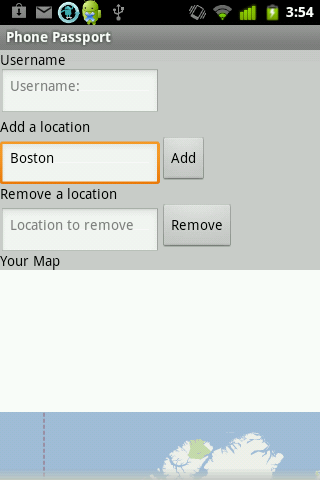

 A passport has a secondary function - it lists all the places a person has traveled in one convenient location. Carrying one around everywhere isn't feasible though, so this app allows a user to input the places they've been.